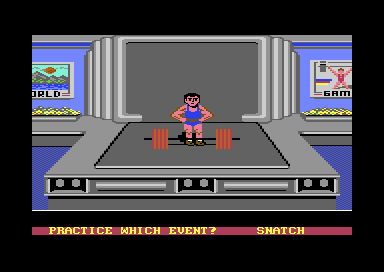
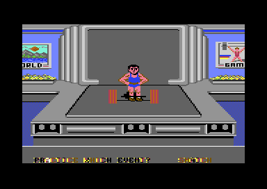
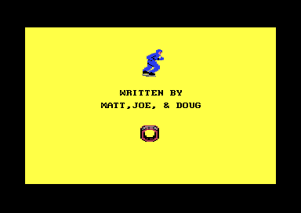
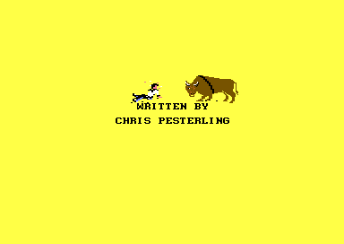
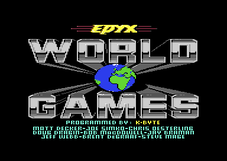
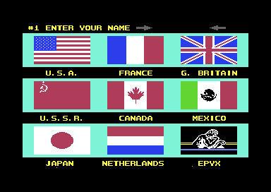

<meta charset="utf-8">
<meta name="viewport" content="width=device-width, initial-scale=1">
<title>World Games: Discoveries</title>
<link rel="preconnect" href="https://fonts.googleapis.com">
<link rel="stylesheet" href="https://fonts.googleapis.com/css2?family=Lato:wght@400;700;900&family=IBM+Plex+Mono:wght@400;500&display=swap">
<style>
:root{
  --bg:#23262d; --paper:#e9e7e1; --surface:#ffffff; --surface-2:#f1efea; --line:#d5d3cc; --line-soft:#e0ded8;
  --ink:#2f3136; --ink-soft:#55585f; --ink-mute:#80838a;
  --link:#1f5fa8; --link-hover:#154480; --accent:#1f5fa8;
  --amber:#c25a00; --cyan:#1f5fa8; --coral:#d04a3a; --green:#2a8a4a; --violet:#4a5bd6; --hl:#fff0c2;
  --chip:#2f3136; --chip-ink:#ffffff;
  --c64blue:#40318d; --c64grey:#686868;
  --fd:'Lato',system-ui,sans-serif; --fb:'Lato',system-ui,sans-serif; --fm:'IBM Plex Mono',ui-monospace,Menlo,monospace;
  --col:1080px; --gx:68px; --fs:17px; --lh:1.6; --hw:900; --h1:46px; --h2:26px; --sy:48px; --pp:26px; --r:10px;
  --plate-shadow:0 1px 2px rgba(0,0,0,.05),0 4px 14px rgba(0,0,0,.05);
}
*{box-sizing:border-box}
html{background:var(--bg);min-height:100%}
body{background:var(--paper);color:var(--ink);font-family:var(--fb);font-size:var(--fs);line-height:var(--lh);max-width:var(--col);margin:0 auto;min-height:100vh;padding:0 0 4rem}
h1,h2,h3{font-weight:var(--hw);letter-spacing:-.01em;text-wrap:balance;color:var(--ink);margin:0}
.wrap{padding:0 var(--gx)}
.hero{padding:48px var(--gx) 8px;text-align:left}
.eyebrow{font-family:var(--fm);font-size:12px;letter-spacing:.08em;text-transform:uppercase;color:var(--ink-mute);margin:0 0 10px}
.hero h1{font-size:var(--h1);line-height:1.15;letter-spacing:-.02em;margin:0 0 14px}
.hero .sub{margin:0 0 .6em;color:var(--ink-soft)}
section{padding:var(--sy) 0 24px}
section:last-of-type{border-bottom:none}
.fig{font-family:var(--fm);font-size:12px;letter-spacing:.08em;text-transform:uppercase;color:var(--ink-mute);margin:0 0 10px}
h2.t{font-size:var(--h2);margin-bottom:12px}
.lede{color:var(--ink-soft);margin:0 0 30px}
.plate{background:var(--surface);border:1px solid var(--line);border-radius:var(--r);padding:var(--pp);box-shadow:var(--plate-shadow)}
.cap{font-size:14px;color:var(--ink-mute);margin-top:14px;line-height:1.55}
.cap b{color:var(--ink);font-weight:700}
code{font-family:var(--fm);font-size:.82em;background:var(--chip);color:var(--chip-ink);border-radius:4px;padding:2px 6px;overflow-wrap:break-word;-webkit-box-decoration-break:clone;box-decoration-break:clone}

.wg-cv{display:block;width:100%;height:auto;image-rendering:pixelated;background:#000;border-radius:4px}
.wg-stack{position:relative}
.wg-stack canvas+canvas{position:absolute;left:0;top:0;width:100%;height:100%;background:transparent;pointer-events:none}
.wg-bar{display:flex;flex-wrap:wrap;gap:8px;margin:0 0 14px;align-items:center}
.wg-btn{font:inherit;font-family:var(--fm);font-size:12.5px;background:var(--surface);border:1px solid var(--line);border-radius:6px;padding:5px 11px;color:var(--ink);cursor:pointer;line-height:1.3}
.wg-btn:hover{border-color:var(--ink-mute)}
.wg-btn[aria-pressed="true"]{background:var(--accent);border-color:var(--accent);color:#fff}
.wg-out{font-size:15px;color:var(--ink);margin:12px 0 0;min-height:3em;line-height:1.55}
.wg-out b{font-weight:700}
.wg-pics{display:grid;grid-template-columns:repeat(4,minmax(0,1fr));gap:12px}
.wg-pics.two{grid-template-columns:repeat(2,minmax(0,1fr))}
.wg-pics figure{margin:0}
.wg-pics img{display:block;width:100%;height:auto;image-rendering:pixelated;border-radius:4px}
.wg-pics figcaption{font-size:13px;color:var(--ink-mute);margin-top:5px;line-height:1.4}
.wg-tbl{border-collapse:collapse;font-size:14px;width:100%;margin:4px 0 0}
.wg-tbl th,.wg-tbl td{text-align:left;vertical-align:top;padding:5px 8px;border-bottom:1px solid var(--line-soft)}
.wg-tbl th{font-weight:700;color:var(--ink-soft)}
.wg-tbl td.wg-n{font-family:var(--fm);font-size:13px;white-space:nowrap}
.wg-tbl tr.wg-on td{background:var(--hl)}
.wg-wrapx{overflow-x:auto}
.wg-field{display:flex;flex-wrap:wrap;gap:8px 14px;align-items:center;font-size:14px;margin:0 0 12px}
.wg-field label{color:var(--ink-soft)}
.wg-range{width:100%;max-width:360px;accent-color:var(--accent)}
.wg-mono{font-family:var(--fm);font-size:13px}
.wg-sub{font-size:14px;font-weight:700;color:var(--ink-soft);margin:16px 0 6px}
.wg-win{display:flex;gap:10px;margin:4px 0;align-items:center}
.wg-win em{font-style:normal;font-family:var(--fm);font-size:12px;color:var(--ink-soft);width:210px;flex:none}
.wg-win span{flex:1;min-width:0;height:16px}
.wg-win span i{display:flex;justify-content:flex-end;height:100%;background:var(--line);border-radius:3px;overflow:hidden}
.wg-win span b{display:block;height:100%;background:var(--green);min-width:2px}
.wg-bars{display:flex;gap:3px;align-items:flex-end;height:120px;margin:8px 0 0}
.wg-bars div{flex:1;min-width:0;display:flex;flex-direction:column;justify-content:flex-end;align-items:center;height:100%;cursor:pointer}
.wg-bars i{display:block;width:100%;background:var(--accent);border-radius:2px 2px 0 0;min-height:1px}
.wg-bars b{font-family:var(--fm);font-size:10.5px;font-weight:500;color:var(--ink-mute);margin-top:3px}
.wg-bars div.on i{background:var(--amber)}
.wg-bars div.over i{background:var(--coral)}
.wg-strip{display:grid;grid-template-columns:repeat(10,minmax(0,1fr));gap:4px}
.wg-strip button{font:inherit;font-family:var(--fm);font-size:12px;background:var(--surface-2);border:1px solid var(--line);border-radius:5px;padding:4px 0;cursor:pointer;color:var(--ink)}
.wg-strip button[aria-pressed="true"]{background:var(--accent);border-color:var(--accent);color:#fff}
.wg-mem{position:relative;height:34px;background:var(--surface-2);border:1px solid var(--line);border-radius:5px;margin:6px 0 4px;overflow:hidden}
.wg-mem i{position:absolute;top:0;bottom:0;border-right:1px solid rgba(255,255,255,.7)}
.wg-memx{display:flex;justify-content:space-between;font-family:var(--fm);font-size:11px;color:var(--ink-mute)}
.wg-key{display:inline-block;width:11px;height:11px;border-radius:2px;vertical-align:-1px;margin-right:6px}
.wg-chart{display:block;width:100%;height:auto}
.wg-grid{display:grid;grid-template-columns:repeat(32,minmax(0,1fr));gap:1px;margin:6px 0 0}
.wg-grid i{display:block;aspect-ratio:1;background:var(--green)}
.wg-grid i.fall{background:var(--coral)}
.wg-time{display:flex;flex-wrap:wrap;gap:8px 18px;align-items:center;font-size:14px;margin:0 0 10px}
.wg-time input{font:inherit;font-family:var(--fm);font-size:14px;width:4.2em;padding:3px 6px;border:1px solid var(--line);border-radius:6px;background:var(--surface)}
.wg-clocks{display:grid;grid-template-columns:repeat(2,minmax(0,1fr));gap:14px;margin:4px 0 0}
.wg-clocks div{background:#000;color:#fff;border-radius:6px;padding:14px;text-align:center}
.wg-clocks b{display:block;font-family:var(--fm);font-size:34px;font-weight:500;line-height:1.2}
.wg-clocks span{font-size:13px;color:#b2b2b2}
@media (max-width:720px){:root{--gx:16px;--h1:34px;--pp:16px}.wg-pics{grid-template-columns:repeat(2,minmax(0,1fr))}.wg-strip{grid-template-columns:repeat(5,minmax(0,1fr))}.wg-win{flex-wrap:wrap;gap:2px}.wg-win em{width:100%}.wg-win span{flex:1 1 100%}}
</style>
<!-- tabs -->
<header class="hero">
  <p class="eyebrow">1986 · Epyx</p>
  <h1>World Games: Discoveries</h1>
  <p class="sub">Secrets, quirks and bugs in the eight events, each checked in the emulator or traced in the code, with the evidence beside it.</p>
</header>
<main class="wrap">

<section id="crash" data-part="weightlifting">
  <p class="fig">01 · Weightlifting</p>
  <h2 class="t">Bug: 865 kg stops the processor</h2>
  <p class="lede">A player's report on C64-Wiki says weightlifting crashes at 865 kg. It does. The routine that draws the plates enters a run of instructions one byte into one of them, and that byte is one that halts the processor. Choose a weight.</p>
  <div class="plate">
    <div class="wg-pics two">
      <figure><figcaption>860 kg: the plates drawn.</figcaption></figure>
      <figure><figcaption>865 kg: the processor stopped while the screen was being drawn.</figcaption></figure>
    </div>
    <div class="wg-field" style="margin-top:12px"><label for="wg-865">Weight</label><input type="range" class="wg-range" id="wg-865" min="15" max="173" value="173"><span class="wg-mono" id="wg-865-kg"></span></div>
    <p class="wg-out" id="wg-865-out"></p>
    <p class="cap"><code>wl_plates</code> (<code>$1985</code>) and <code>wl_strip</code> (<code>$1C31</code>), held by <code>test_widgets.js</code> to the game's code for every weight and every strip, with the lifter standing, as while a weight is chosen: the bar's line, <code>$2F</code>, is <code>$31</code>. Checked in VICE on 30 October 2026: with the weight set to 860 kg the plates were drawn, and at 865 kg the processor stopped at <code>$1C63</code> and stayed there.</p>
  </div>
  <p>The routine takes 25 kg off the weight, then 100 kg for a big plate and 50 kg for a second, when the weight has them. What is left, in 5 kg steps, sets where the last plate starts: 9 less it (<code>$19B3</code>). Up to 225 kg what is left is 0 to 9. Above 225 kg, 9 less it is below 0, and the routine draws its largest last plate instead. At 865 kg, 9 less it is -129, one below the least a byte can hold, and the byte reads +127.</p>
  <p>The plates are drawn by 75 <code>STA</code> instructions in a row, each storing a byte of the plate in the picture, one for each pixel line, entered three bytes on for each line down (<code>wl_column_writer</code>, <code>$1C53</code>). The last plate now starts 176 lines down, and three times 176 overflows a byte too: the writer is entered at <code>$1C63</code>, the second byte of <code>STA $67F2,X</code>. That byte, <code>$F2</code>, is one of the twelve codes that stop the C64's processor, a 6502, where it stands.</p>
  <p>A player reaches 865 kg in a competition. A good lift at 225 kg, the hardest timing the game sets, makes the next weight 230 kg, and from there each push right adds 5 kg with no limit (<a href="#weights">below</a>). The 127th push stops the machine.</p>
</section>

<section id="weights" data-part="weightlifting">
  <p class="fig">02 · Weightlifting</p>
  <h2 class="t">Bug: above 225 kg the timing comes from code</h2>
  <p class="lede">The table that sets how much of each window is good ends at 225 kg, but the weights go on. From 230 kg the game reads its factor from the instructions after the table, so some weights above 225 kg are easier than 150 kg, and others give a single good frame.</p>
  <div class="plate">
    <div class="wg-wrapx"><table class="wg-tbl" id="wg-kg-tbl"></table></div>
    <p class="cap">The factor for each weight, read where <code>$1482</code> reads it, at <code>wl_timing</code> (<code>$1493</code>) plus the weight in 5 kg steps, less 15. Past the table's 31 bytes the reads land in <code>wl_kg</code> (<code>$14B2</code>), the routine that turns a weight into its digits. The last column is the good part of one of the lift's windows of 160 frames, the routine's sum as <a href="index.html#weightlifting">How it works</a> shows it. Checked in VICE on 30 October 2026: with the weight set to 230, 235, 240, 245 and 250 kg, <code>$1482</code> left <code>$A2</code>, <code>$00</code>, <code>$86</code>, <code>$1E</code> and <code>$86</code> in <code>$4B</code>.</p>
  </div>
  <p>A competition gets there. After a round with a good lift, the next round starts 5 kg above that lift (<code>$124F</code>), so a good lift at 225 kg makes the next weight 230 kg. Right on the stick refuses to raise the weight only when it is exactly 225 kg (<code>$146C</code>), so from 230 kg it raises it with no limit. At 230 kg the factor is <code>$A2</code>, 162 out of 256: the good part of each window is as large as at 105 kg, where the table holds <code>$A3</code>. At 235 kg the factor is 0, and the routine that sizes the window gives it its least, one frame.</p>
</section>

<section id="heat" data-part="slalom">
  <p class="fig">03 · Slalom</p>
  <h2 class="t">Bug: the final heat can keep the slower time</h2>
  <p class="lede">A slalom competition has two heats, and the better of each skier's two times should count. The comparison mixes up two ways of writing a time, and keeps whichever time its test lets through. Enter two times.</p>
  <div class="plate">
    <div class="wg-time"><label>First heat <input type="number" id="wg-h1s" min="0" max="59" value="45"> s <input type="number" id="wg-h1h" min="0" max="99" value="60"> hundredths</label></div>
    <div class="wg-time"><label>Final heat <input type="number" id="wg-h2s" min="0" max="59" value="44"> s <input type="number" id="wg-h2h" min="0" max="99" value="50"> hundredths</label></div>
    <p class="wg-out" id="wg-heat-out"></p>
    <p class="cap">The rule of <code>sl_keep_result</code> (<code>$F20C</code>) from <code>$F24D</code>, held by <code>test_widgets.js</code> to the game's routine on 23,600 pairs of times. Checked in VICE on 30 October 2026 with five pairs: it kept the slower time in two of them.</p>
  </div>
  <p>The first heat's result is kept in the player's record as a score, 99 less each pair of digits of the time, so that a faster time has a higher score (<code>$F27D</code>). The final heat's time is compared with that score, pair by pair from the minutes, as if the two were written the same way (<code>$F263</code>): where the score is lower than the new time's digits, the first heat's result stays, and where it is not, the next pair is tried. The new time is kept only when every pair passes, which comes down to this: the two times' seconds add up to 99 or less, and so do their hundredths. Which time is faster plays no part.</p>
</section>

<section id="credits" data-part="">
  <p class="fig">04 · Two events</p>
  <h2 class="t">Secret: AUTHOR and OFTHEGAME open two credits screens</h2>
  <p class="lede">Name the first two players AUTHOR and OFTHEGAME, in either order, and barrel jumping and bull riding each show who wrote them instead of starting.</p>
  <div class="plate">
    <div class="wg-pics two">
      <figure><figcaption>Barrel jumping: "WRITTEN BY / MATT,JOE, &amp; DOUG".</figcaption></figure>
      <figure><figcaption>Bull riding: "WRITTEN BY / CHRIS PESTERLING".</figcaption></figure>
    </div>
    <p class="cap">Seen in VICE on 30 October 2026, with the two names in the first two players' records.</p>
    <figure style="margin:14px 0 0"><figcaption class="cap">The title screen's credits, for comparison.</figcaption></figure>
  </div>
  <p>Each event compares the first two players' names, nine characters at a time, with its own copies of AUTHOR and OFTHEGAME (<code data-part="barrel-jumping">$286A</code> in barrel jumping, <code data-part="bull-riding">br_hidden_check</code>, <code data-part="bull-riding">$2ED7</code>, in bull riding). On a match it shows its screen until the fire button is pressed, sets the shell's practice flag (<code data-part="shell">$081D</code>) and goes back to the shell without running the event. The two events were written by different people, and each hid its own credit in the same way.</p>
  <p>The title screen's programmers include Matt Decker, Joe Simko and Doug Dragin, the Matt, Joe and Doug of barrel jumping's screen. Bull riding's screen spells its author's name Pesterling, where the title spells it Oesterling.</p>
</section>

<section id="eight-seconds" data-part="bull-riding">
  <p class="fig">05 · Bull riding</p>
  <h2 class="t">Bug: the eight-second ride lasts twenty-four seconds</h2>
  <p class="lede">A rider who stays on until 8 on the clock wins the ride. The clock counts a hundredth twice in every three frames, so its seconds pass at a third of the real ones. Start the ride.</p>
  <div class="plate">
    <div class="wg-bar"><button type="button" class="wg-btn" id="wg-ride">Start the ride</button></div>
    <div class="wg-clocks"><div><b id="wg-ride-game">0.00</b><span>the event's clock</span></div><div><b id="wg-ride-real">0.0</b><span>seconds on a PAL machine</span></div></div>
    <p class="cap">The clock as <code>br_clock</code> (<code>$1C9F</code>) runs it, at the 50 frames a second of a PAL machine. Checked in VICE on 30 October 2026: 15 frames moved the clock on 10 hundredths.</p>
  </div>
  <p>The clock runs on two frames in every three, and adds one hundredth each time. A second on the clock is 150 frames, three real seconds, and 8 on the clock is 1,200 frames. On an American NTSC machine, at 60 frames a second, the ride lasts about 20 seconds.</p>
</section>

<section id="caber" data-part="caber-toss">
  <p class="fig">06 · Caber toss</p>
  <h2 class="t">Bug: the caber's height comes from an instruction</h2>
  <p class="lede">At the release the caber's speed up comes from a table, read at a place set by how long fire was held. The count that should move it never leaves 0, so every throw reads the same byte, five places past the table's end.</p>
  <div class="plate">
    <canvas id="wg-ct" class="wg-chart" width="640" height="200" aria-label="The release table and the bytes after it"></canvas>
    <div class="wg-field" style="margin-top:10px"><label for="wg-ct-3a">The count's high byte, <code>$3A</code></label><input type="range" class="wg-range" id="wg-ct-3a" min="0" max="8" value="0"><span class="wg-mono" id="wg-ct-3a-out"></span></div>
    <p class="wg-out" id="wg-ct-out"></p>
    <p class="cap">The 256 bytes from <code>$1CC8</code>: the two curves the release reads, 251 bytes in blue, and the five bytes of code after them in grey. The speed across reads the table at <code>$3A</code>, and the speed up at 255 less three quarters of <code>$3A</code> (<code>ct_release</code>, <code>$1AD0</code>). Checked in VICE on 30 October 2026: three throws, with fire held 10, 30 and 90 frames, each read <code>$1DC7</code>.</p>
  </div>
  <p>While fire is held, a count grows each frame by the run's speed, and the caber leans further each time it passes a threshold (<a href="index.html#caber">How it works</a>). The count's low byte is <code>$39</code> and its high byte <code>$3A</code>, which goes up when the low byte passes 255. The last threshold is <code>$D4</code>, and a lean of 5 fells the caber before the count can reach 256, so <code>$3A</code> is 0 at every release.</p>
  <p>With <code>$3A</code> at 0 the speed up is read at index 255, <code>$1DC7</code>. The curves hold 251 bytes, a falling one and a rising one that ends at <code>$FF</code>, and <code>$1DC7</code> is the first byte of <code>DEC $5D</code>, <code>$C6</code>. Every throw gets 198 where the table's top values are 255, and the speed across always takes the table's first byte, <code>$F8</code>.</p>
</section>

<section id="flags" data-part="slalom">
  <p class="fig">07 · Slalom</p>
  <h2 class="t">A flag hit head-on is a fall 100 times in 256</h2>
  <p class="lede">The manual says a skier who hits a gate head-on wipes out. The game decides by the frame counter: below 100 the skier falls, and from 100 to 255 the flag bends and the skier skis on.</p>
  <div class="plate">
    <div class="wg-grid" id="wg-flag-grid"></div>
    <p class="cap">The frame counter, <code>$70</code>, from 0 to 255 in rows of 32: red where a head-on hit is a fall, green where the flag bends (<code>sl_flag_hit</code>, <code>$F371</code>). Checked in VICE on 30 October 2026: with the counter at 0, 50 and 99 the skier fell, and at 100, 150 and 255 the flag bent.</p>
  </div>
  <p>A hit one column to either side of a flag always bends it. The counter goes up every frame, so a head-on hit is a fall for two seconds in every five, and a skier cannot tell which.</p>
</section>

<section id="gull" data-part="cliff-diving">
  <p class="fig">08 · Cliff diving</p>
  <h2 class="t">Secret: a gull for a score of exactly 101</h2>
  <p class="lede">A clean dive that scores exactly 101 sends a gull flying across the screen from the right. Only a dive from the top level, which starts at 106, can score it.</p>
  <div class="plate">
    <p class="cap" style="margin-top:0">At the end of a dive the score is compared with 101, and on a match the gull's list of poses starts: its wingbeat, poses 76, 77, 78 and 77, over and over (<code>$1870</code>; <code>cd_gull_list</code>, <code>$273F</code>; <code>cd_gull_poses</code>, <code>$278B</code>). Checked in VICE on 30 October 2026: the end of a dive called with scores of 101, 100, 102, 99 and 1 started the gull for 101 alone, and not for 101 after a fault.</p>
  </div>
  <p>A dive from the top starts with 106 points and loses 5 for each new push of the stick, so 101 is a dive from the top with one change of position, a clean entry and no points lost in the water (<a href="index.html#cliff">How it works</a>).</p>
</section>

<section id="feet" data-part="log-rolling">
  <p class="fig">09 · Log rolling</p>
  <h2 class="t">Bug: running backwards flat out stops the feet</h2>
  <p class="lede">Each step takes 7 off a lumberjack's speed when running backwards. Forwards the speed stops at 127; backwards, one step too many wraps it round, and the feet all but stop. Take a step back.</p>
  <div class="plate">
    <div class="wg-bar"><button type="button" class="wg-btn" id="wg-feet-step">Step back</button><button type="button" class="wg-btn" id="wg-feet-reset">Stand still</button></div>
    <p class="wg-out" id="wg-feet-out"></p>
    <p class="cap"><code>lr_step</code> (<code>$2183</code>) as <code>test_widgets.js</code> holds it to the game's routine, for every speed in both directions. Checked in VICE on 30 October 2026: called with -121 it gave -128, and with -122 and -128 it gave <code>$FFFF</code>.</p>
  </div>
  <p>The speed is kept in two bytes, a whole part and 256ths, and a step changes the whole part. Forwards, a step that would pass 127 sets the speed to <code>$7FFF</code>, the most there is. Backwards, a step from -122 or below would pass -128, and the routine sets the speed to <code>$FFFF</code>, which is -1/256, where <code>$8000</code>, -128, was meant. A lumberjack running backwards as fast as they can is suddenly standing still on the log.</p>
</section>

<section id="judge" data-part="weightlifting">
  <p class="fig">10 · Weightlifting</p>
  <h2 class="t">Bug: the first judge votes at once</h2>
  <p class="lede">Three judges vote on a lift, each after a delay. The first judge's delay comes from a sum that is always 0, so it votes the moment the lift is held overhead.</p>
  <div class="plate">
    <p class="cap" style="margin-top:0">The delay is the high byte of the pushes' timing averaged by <code>wl_divide</code> (<code>$1DF2</code>), called at <code>$14F9</code>. Each push's timing is below 128, and so is their average. Checked in VICE on 30 October 2026: called with sums of 64, 381 and 511, it gave a high byte of 0 each time.</p>
  </div>
  <p>The other two judges vote up to 31 frames apart. A judge votes white while the hold is under 48 frames, so the first judge always votes white on a lift that reaches the judges (<code>wl_vote</code>, <code>$1577</code>).</p>
</section>

<section id="collapse" data-part="weightlifting">
  <p class="fig">11 · Weightlifting</p>
  <h2 class="t">Bug: a letter chooses how a lifter collapses</h2>
  <p class="lede">A lifter who holds the weight too long collapses in one of two ways, chosen by a random number against a limit. The limit is read from the text "CURRENT WEIGHT".</p>
  <div class="plate">
    <p class="cap" style="margin-top:0">At <code>$1549</code> the event reads the first byte of <code>wl_txt_weight</code> (<code>$16F5</code>), the letter C, <code>$43</code>, and multiplies it by 5, which in 8 bits is <code>$4F</code>. A random number of <code>$4F</code> or more plays script 6, and a lower one script 5 (<code>$155B</code>). Checked in VICE on 30 October 2026: <code>$16F5</code> held <code>$43</code> and the limit came to <code>$4F</code>; random numbers <code>$00</code> and <code>$4E</code> played script 5, and <code>$4F</code>, <code>$80</code> and <code>$FF</code> script 6.</p>
  </div>
  <p>The text's C is a byte like any other, and <code>$4F</code> splits the 256 random numbers 177 to 79: script 6 plays about seven times in ten. The two scripts play the endings of a lift held too long, each with its own sounds (script 5 starts tunes 9, 10, 11 and 7, script 6 only tune 7, all on <a href="index.html#music">the music player</a>).</p>
</section>

<section id="epyx" data-part="menu">
  <p class="fig">12 · The menu</p>
  <h2 class="t">Secret: Epyx is a country</h2>
  <p class="lede">The eighteen countries a player can represent include Epyx, the publisher, with a flag and an anthem of its own. On the country screen, the S key plays the anthem of the flag under the frame without choosing it.</p>
  <div class="plate">
    <figure style="margin:0"></figure>
    <p class="cap">The country screen, with Epyx at the end of the bottom row in view. Its anthem is the menu's tune 14 (<code>country_tunes</code>, <code>$1E8A</code>, holds twice each flag's tune). The S key was tried in VICE on 30 October 2026: it played the anthem under the frame, and a move of the joystick stopped it. Every anthem plays on the <a href="index.html#anthems">anthem player</a>.</p>
  </div>
  <p>The country screen's template also has a name in it: the row reads "NELSON S.  PICK YOUR COUNTRY" before the player's name is written over the first ten characters (<code>pick_country_text</code>, <code>$3CE9</code>).</p>
</section>

<section id="slalom-colour" data-part="slalom">
  <p class="fig">13 · Slalom</p>
  <h2 class="t">Bug: the best time's colour is written to the joystick chip</h2>
  <p class="lede">Slalom shows the best time at the top right in white. The loop that colours it writes to <code>$DC47</code> and on, where colour RAM's <code>$D847</code> was meant. <code>$DC00</code> to <code>$DCFF</code> belongs to CIA 1, the chip that reads the joysticks.</p>
  <div class="plate">
    <p class="cap" style="margin-top:0">At <code>$8189</code> the event copies the best time's seven characters from <code>$0FF0</code> to row 1, column 31, on both of its screens, and writes 1, white, to <code>$DC47</code> plus the character's place, where <code>$D847</code> plus the place was meant. Checked in VICE on 30 October 2026 as a slalom run began: the loop wrote 1 to <code>$DC4D</code> down to <code>$DC47</code>, and colour RAM at <code>$D847</code>-<code>$D84D</code> already held 1.</p>
  </div>
  <p>Row 1 is white already, so the screen shows nothing wrong, and the seven writes go to the chip instead.</p>
  <p>The slalom timer has an end of its own. At 10 minutes on the clock the run starts again from the top, with no result kept (<code>sl_timer_second</code>, <code>$F1A7</code>).</p>
</section>

<section id="leftovers" data-part="">
  <p class="fig">14 · Leftovers</p>
  <h2 class="t">Things the game carries and never uses</h2>
  <p class="lede">Each event was written apart, and several kept something they no longer needed.</p>
  <div class="plate">
    <div class="wg-wrapx"><table class="wg-tbl">
      <tr><th>Where</th><th>What</th></tr>
      <tr><td>Weightlifting</td><td>"Butch Badorsik (USA)", a name and country that nothing prints, among the event's texts (<code data-part="weightlifting">wl_txt_butch</code>, <code data-part="weightlifting">$1661</code>)</td></tr>
      <tr><td>Sumo</td><td>a readout for the developers that nothing calls: it would write each wrestler's pose, stick, state and speed in hexadecimal into the text row (<code data-part="sumo">su_debug</code>, <code data-part="sumo">$2BC1</code>)</td></tr>
      <tr><td>Log rolling</td><td>tune 6, the teeter on voice 3: the second lumberjack's teeter writes its step and then starts tune 5 (<code data-part="log-rolling">$1FB9</code>)</td></tr>
      <tr><td>Weightlifting, barrel jumping, bull riding, caber toss</td><td>tunes in each event's list that nothing starts: weightlifting's 3, 4 and 8, barrel jumping's 3 and 12, bull riding's 3, caber toss's 9, all on <a href="index.html#music">the music player</a></td></tr>
      <tr><td>Cliff diving</td><td>a smooth scroll from one level to another, skipped by a <code>JMP</code> (<code data-part="cliff-diving">cd_smooth_scroll</code>, <code data-part="cliff-diving">$28F4</code>; <code data-part="cliff-diving">$2796</code>)</td></tr>
      <tr><td>Bull riding</td><td>a copy of the sprites' offsets table that nothing reads (<code data-part="bull-riding">$9400</code>)</td></tr>
    </table></div>
  </div>
</section>

</main>
<footer style="margin:16px 0 0;padding:22px var(--gx) 0;border-top:1px solid #e0ded8;font-family:'IBM Plex Mono',ui-monospace,Menlo,monospace;font-size:12px;color:#80838a"><a href="https://github.com/gamesexplained/gamesexplained" style="color:#1f5fa8;text-decoration:none">GitHub</a> · <a href="https://discord.gg/3V9GWyRDWV" style="color:#1f5fa8;text-decoration:none">Discord</a><br>© Games Explained contributors. Write-ups, facts and symbol maps are available under <a href="https://creativecommons.org/licenses/by-sa/4.0/" style="color:#1f5fa8;text-decoration:none">CC BY-SA 4.0</a>; code under <a href="https://opensource.org/licenses/MIT" style="color:#1f5fa8;text-decoration:none">MIT</a></footer>
<script src="../../lib/c64.js"></script>
<script>
/* wg-rules */
// The page's own sums, each held to the game's routine by test_widgets.js.
// wlGood: the good part of a weightlifting window of len frames at the weight's factor
// (wl_multiply, $1DCB: the high byte of len times factor; $1910 makes 0 into 1).
function wlGood(len, factor) { return ((len * factor) >> 8) & 0xFF || 1; }
// bullNext: bull riding's choice of the next move (br_choose_move, $222C) after a move of kind
// (0 a buck, 1 a run, 2 a spin), for the bull's five thresholds o, the random numbers r1 and, for
// a spin, r2. Gives the points, the next kind ('place' where the arena's place decides between a
// run and a spin, $22C2) and whether the bull turns round.
function bullNext(o, kind, r1, r2) {
  const spin = (pts) => r2 >= o[4] ? { pts: pts + (kind === 2 ? 3 : 0), next: 2, turn: true } : { pts, next: 2, turn: false };
  if (kind === 0) return r1 >= o[2] ? { pts: 5, next: 'place', turn: false } : spin(6);
  if (kind === 1) {
    if (r1 < o[0]) return { pts: 3, next: 'place', turn: false };
    if (r1 < o[1]) return spin(4);
    return { pts: 5, next: 0, turn: false };
  }
  return r1 < o[3] ? spin(3) : { pts: 4, next: 'place', turn: false };
}
// lrPoints: log rolling's change of points each 16 frames (lr_points, $33D0) for the log's
// speed and the lean (signed), before or after 0:30 on the clock, from the two tables.
function lrPoints(ram, log, lean, late) {
  const d = Math.max(0, Math.abs(log) - Math.abs(lean));
  return late ? -ram[0x34B0 + d] : ram[0x3490 + d];
}
// suFinal: a sumo score (su_final_scores, $26DF) from the 24-bit total and the bout's length in
// units of 256 frames ($95, 0 to 254), halved for the loser.
function suFinal(total, units, lost) {
  const top = ((total * 2) >>> 8) & 0xFFFF, q = Math.floor(top / (units + 1)) & 0xFFFF;
  return lost ? q >> 1 : q;
}
// end of wg-rules
</script>
<script>
/* wg-disc */
// slKeeps: slalom's final heat (sl_keep_result, $F20C, from $F24D) with a first heat's result
// kept: whether the new time replaces it. Each time is [minutes, seconds, hundredths]. The
// kept score is 99 less each pair of digits; it is compared, from the minutes, with the new
// time's pairs, and the first pair where the score is lower keeps the old result.
function slKeeps(old, neu) {
  for (let i = 0; i < 3; i++) if (99 - old[i] < neu[i]) return false;
  return true;
}
// lrStep: a step of log rolling's feet (lr_step, $2183) on the speed's high and low bytes,
// backwards or forwards. Gives [high, low].
function lrStep(hi, lo, back) {
  const was = hi & 0x80;
  if (!back) { const n = (hi + 7) & 0xFF; if (!(n & 0x80) || was) return [n, lo]; return [0x7F, 0xFF]; }
  const n = (hi - 7) & 0xFF; if ((n & 0x80) || !was) return [n, lo]; return [0xFF, 0xFF];
}
// wlPlates: weightlifting's plates for the weight in 5 kg steps, w ($38): wl_plates ($1985) gives
// $E0-$E6 in e, the big plates' bits and the last plate's offset, length and patterns; rest is
// what was left after the big plates. ram is the part's memory, for the bar's ends at $1A0C.
function wlPlates(ram, w) {
  let e0 = 0, rest = (w - 5) & 0xFF;
  if (rest >= 0x14) { e0 |= 0x80; rest = (rest - 0x14) & 0xFF; }
  const fifty = rest >= 0x0A;
  if (fifty) { e0 |= 0x40; rest = (rest - 0x0A) & 0xFF; }
  let e1 = (9 - rest) & 0xFF, e2 = (rest + 1) << 1 & 0xFF, e3 = 0x0F, e4 = 0xF0;
  if (e1 & 0x80) { e1 = 0; e2 = 0x14; e3 = 0x09; e4 = 0x60; }
  if (fifty) { e3 = (e3 << 4 | 0x09) & 0xFF; e4 = e4 >> 4 | 0x60; }
  const x = e0 >> 6;
  return { e: [e0, e1, e2, e3, e4, ram[0x1A0C + x], ram[0x1A10 + x]], rest };
}
// wlStrip: where wl_strip ($1C31) enters the column writer for a strip starting at line `line`
// ($30), and the offset from there of the RTS it plants for one `len` lines long ($31). Each sum
// is kept to a byte, as the routine keeps it.
function wlStrip(line, len) {
  const lo = ((line << 1 & 0xFF) + line & 0xFF) + 0x53;
  return { entry: 0x1C00 + lo, rts: (len << 1 & 0xFF) + len & 0xFF };
}
// end of wg-disc
</script>
<script>
/* wg-dui */
'use strict';
const $ = (id) => document.getElementById(id);
const hex = (n, w) => '$' + n.toString(16).toUpperCase().padStart(w || 2, '0');
function missing(el, what) { el.innerHTML = '<p class="cap">This needs ' + what + ', which did not load.</p>'; }
const listings = {};
const recAt = (L, a) => { let r = null; for (const x of L.listing.records) if (x.a <= a && x.b && a < x.a + x.b.length) r = x; return r; };
const part = (id) => listings[id] || (listings[id] = C64.load('parts/' + id + '/listing.json'));

// ---- the weights
function kgWidget(L) {
  const ram = L.ram, rows = [], at = (a) => recAt(L, a);
  for (let kg = 215; kg <= 300; kg += 5) {
    const a = 0x1493 + kg / 5 - 15, f = ram[a], r = at(a);
    const what = a < 0x14B2 ? 'the table' : (r && r.m ? (r.a === a ? 'the instruction ' : 'the operand of ') + r.m.toUpperCase() + (r.o ? ' ' + r.o : '') : 'code');
    rows.push('<tr' + (kg > 225 ? ' class="wg-on"' : '') + '><td class="wg-n">' + kg + ' kg</td><td class="wg-n"><a href="source-weightlifting.html#' + a.toString(16).toUpperCase() + '">' + hex(a, 4) + '</a></td><td>' + what +
      '</td><td class="wg-n">' + hex(f) + ', ' + f + '</td><td class="wg-n">' + wlGood(160, f) + '</td></tr>');
  }
  $('wg-kg-tbl').innerHTML = '<tr><th>Weight</th><th>Read from</th><th>Which is</th><th>Factor</th><th>Good frames of 160</th></tr>' + rows.join('');
}

// ---- the crash at 865 kg
function crashWidget(L) {
  const ram = L.ram, sl = $('wg-865'), out = $('wg-865-out');
  const JAM = [0x02, 0x12, 0x22, 0x32, 0x42, 0x52, 0x62, 0x72, 0x92, 0xB2, 0xD2, 0xF2];
  function show() {
    const w = +sl.value, P = wlPlates(ram, w), raw = 9 - P.rest, line = P.e[1] + 0x31 & 0xFF, S = wlStrip(line, P.e[2]);
    const r = recAt(L, S.entry), k = r ? S.entry - r.a : 0, b = ram[S.entry];
    $('wg-865-kg').textContent = w * 5 + ' kg';
    let t = 'Left after the big plates: <b>' + P.rest + '</b>. Nine less it: <b>' + raw + '</b>';
    if (raw < -128) t += ', which a byte holds as <b>+' + P.e[1] + '</b>.';
    else if (raw < 0) t += ', below 0, so the largest last plate is drawn, at offset 0.';
    else t += '.';
    t += ' The last plate starts on line <b>' + line + '</b>, and the column writer is entered at <b>' + hex(S.entry, 4) + '</b>, ';
    const ins = r ? r.m.toUpperCase() + ' ' + hex(r.b[1] | r.b[2] << 8, 4) + ',X' : 'code';
    if (!k) t += 'the start of <code>' + ins + '</code>: the plate is drawn.';
    else t += (k === 1 ? 'the second' : 'the third') + ' byte of <code>' + ins + '</code>, ' + hex(b) + (JAM.includes(b) ? ': <b>the processor stops</b>.' : ', run as an instruction it was never meant to be.');
    out.innerHTML = t;
  }
  sl.addEventListener('input', show);
  show();
}

// ---- the heat
function heatWidget() {
  const ids = ['wg-h1s', 'wg-h1h', 'wg-h2s', 'wg-h2h'].map($), out = $('wg-heat-out');
  const t = (s, h) => '0:' + String(s).padStart(2, '0') + '.' + String(h).padStart(2, '0');
  function show() {
    const [a, b, c, d] = ids.map((e) => Math.max(0, Math.min(+e.max, Math.floor(+e.value) || 0)));
    const old = [0, a, b], neu = [0, c, d], keep = slKeeps(old, neu), faster = c * 100 + d < a * 100 + b ? 'final' : c * 100 + d > a * 100 + b ? 'first' : 'same';
    const kept = keep ? t(c, d) : t(a, b);
    out.innerHTML = 'Seconds ' + a + ' + ' + c + ' = ' + (a + c) + (a + c <= 99 ? ', 99 or less' : ', more than 99') + '; hundredths ' + b + ' + ' + d + ' = ' + (b + d) + (b + d <= 99 ? ', 99 or less' : ', more than 99') +
      '. The record keeps <b>' + kept + '</b>, ' + (faster === 'same' ? 'the same time either way.' : (keep === (faster === 'final') ? 'the faster time.' : 'the slower time.'));
  }
  ids.forEach((e) => e.addEventListener('input', show));
  show();
}

// ---- the ride
function rideWidget() {
  const btn = $('wg-ride'), g = $('wg-ride-game'), r = $('wg-ride-real');
  let timer = 0;
  btn.addEventListener('click', () => {
    if (timer) { clearInterval(timer); timer = 0; btn.textContent = 'Start the ride'; return; }
    let frame = 0, hund = 0;
    btn.textContent = 'Stop';
    timer = setInterval(() => {
      for (let k = 0; k < 5 && hund < 800; k++) { frame++; if (frame % 3) hund++; }   // five frames a tick, two counts in three
      g.textContent = Math.floor(hund / 100) + '.' + String(hund % 100).padStart(2, '0');
      r.textContent = (frame / 50).toFixed(1);
      if (hund >= 800) { clearInterval(timer); timer = 0; btn.textContent = 'Start the ride'; }
    }, 100);
  });
}

// ---- the caber
function caberWidget(ram) {
  const cv = $('wg-ct'), ctx = cv.getContext('2d'), sl = $('wg-ct-3a'), out = $('wg-ct-out');
  function show() {
    const k = +sl.value, across = k, up = 255 - ((k >> 1) + (k >> 2)), W = cv.width, H = cv.height;
    $('wg-ct-3a-out').textContent = k + (k ? ', never reached' : ', at every throw');
    ctx.clearRect(0, 0, W, H);
    for (let i = 0; i < 256; i++) {
      const v = ram[0x1CC8 + i], x = 4 + i * (W - 8) / 256, w = (W - 8) / 256, h = (H - 24) * v / 255;
      ctx.fillStyle = i === across || i === up ? '#c25a00' : i > 250 ? '#b8b5ad' : '#1f5fa8';
      ctx.fillRect(x, H - 18 - h, Math.max(1, w - 0.4), h);
    }
    ctx.fillStyle = '#80838a'; ctx.font = '11px monospace';
    ctx.fillText('$1CC8', 4, H - 4); ctx.fillText('$1DC7', W - 44, H - 4);
    out.innerHTML = 'The speed across reads ' + hex(0x1CC8 + across, 4) + ', <b>' + hex(ram[0x1CC8 + across]) + '</b>; the speed up reads ' + hex(0x1CC8 + up, 4) + ', <b>' + hex(ram[0x1CC8 + up]) + '</b>' +
      (up > 250 ? ', a byte of code after the table.' : ', inside the table.');
  }
  sl.addEventListener('input', show);
  show();
}

// ---- the flags
function flagWidget() {
  $('wg-flag-grid').innerHTML = Array.from({ length: 256 }, (_, i) => '<i' + (i < 100 ? ' class="fall"' : '') + ' title="' + i + (i < 100 ? ': a fall' : ': the flag bends') + '"></i>').join('');
}

// ---- the feet
function feetWidget() {
  const out = $('wg-feet-out');
  let hi = 0, lo = 0, steps = 0;
  const val = () => { const v = (hi << 8 | lo); return (v & 0x8000 ? v - 0x10000 : v) / 256; };
  function show(note) {
    out.innerHTML = steps + (steps === 1 ? ' step' : ' steps') + ' back: the speed is <b>' + hex(hi << 8 | lo, 4) + '</b>, ' + (Number.isInteger(val()) ? val() : Math.round(val() * 256) + '/256') + (note || '.');
  }
  $('wg-feet-step').addEventListener('click', () => {
    const was = hi;
    [hi, lo] = lrStep(hi, lo, true); steps++;
    show(was & 0x80 && !(((was - 7) & 0xFF) & 0x80) ? ': the step from ' + ((was << 24 >> 24)) + ' wrapped round, and the feet all but stopped.' : '.');
  });
  $('wg-feet-reset').addEventListener('click', () => { hi = 0; lo = 0; steps = 0; show(); });
  show();
}

flagWidget();
heatWidget();
rideWidget();
feetWidget();
if (typeof C64 === 'undefined') { missing($('wg-kg-tbl').parentNode, 'the site\'s C64 library'); missing($('wg-ct').parentNode, 'the site\'s C64 library'); }
else {
  part('weightlifting').then((L) => { kgWidget(L); crashWidget(L); }, () => { missing($('wg-kg-tbl').parentNode, 'weightlifting\'s listing'); missing($('wg-865-out'), 'weightlifting\'s listing'); });
  part('caber-toss').then((L) => caberWidget(L.ram), () => missing($('wg-ct').parentNode, 'caber toss\'s listing'));
}
// end of wg-dui
</script>
